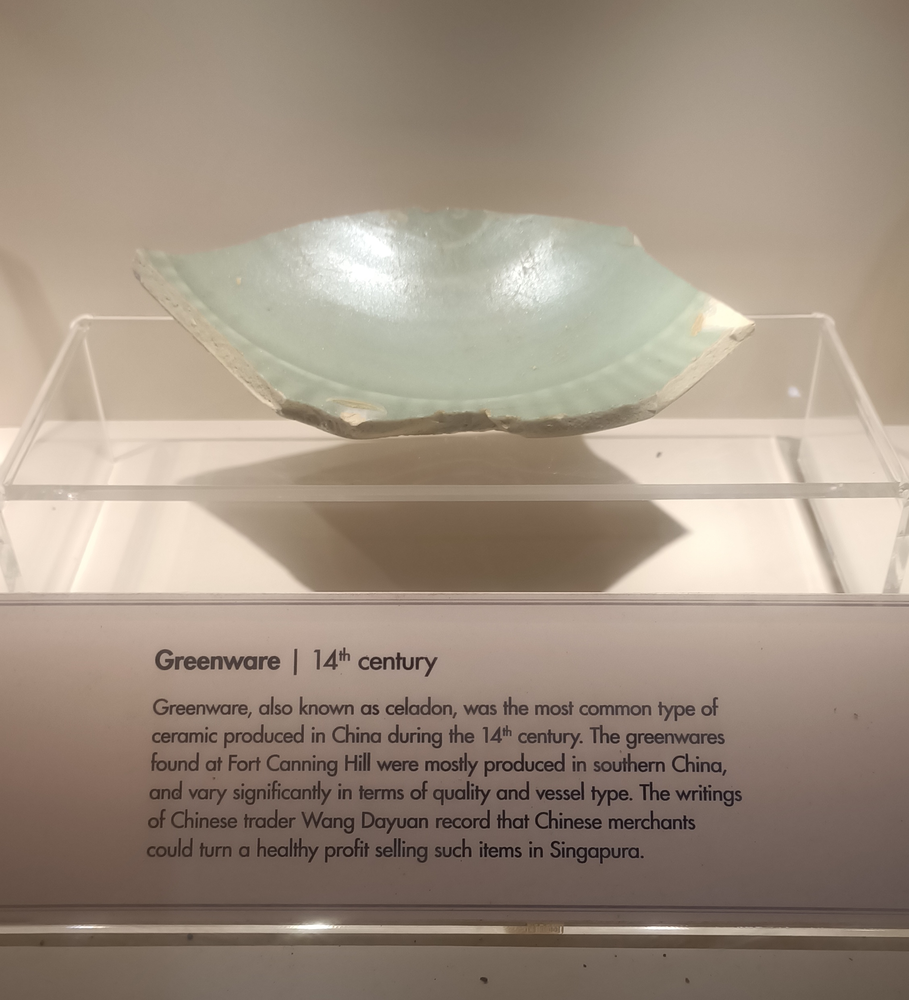
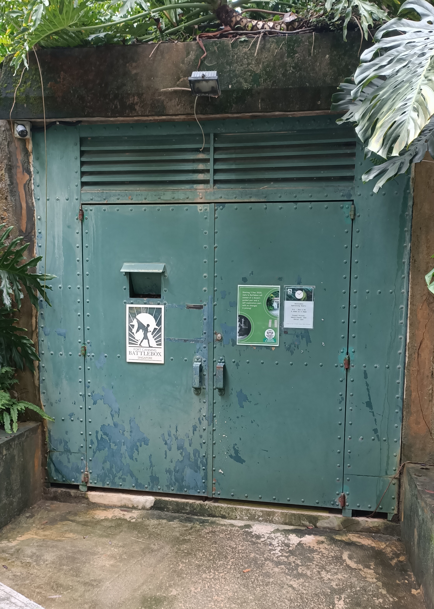

Fort Canning Park is an iconic hilltop landmark that has witnessed many of Singapore’s historical milestones.

Did you know that the hill was once called the fobidden hill? That is because the hill once sited the palaces of 14th century Kings. It also served as the Headquarters of the Far East Command Centre and British Army Barracks. The decision to surrender Singapore to the Japanese on 15 February 1942 was also made on the hill, in the Underground Far East Command Centre, commonly known as Battle Box.
Today, Fort Canning Park features nine historical gardens - the Pancur Larangan, Artisan’s Garden, Sang Nila Utama Garden, Jubilee Park, Raffles Garden, First Botanic Garden, Farquhar Garden, Spice Garden and Armenian Street Park.
Pointers below are from my own experience, click to find out more!
Click here to be directed to National Park's webpage.
Do you think it is possible to plan for a trail that covers all nine gardens? It will take a long time. Let me tell you more about my top 3 gardens so you can plan for yourself to see these "must-see" gardens.
How do you know whether Singapore had a history before Raffles came? There are few written records. However, the land we step on does not lie. Here at Artisan's garden, you can find out more about how and what archaeologist discovered during their "digging journey".
For example, this greenware shows that there was trade in Singapore back in the 14th century, way before Raffles step foot in Singapore.
Click here to find out more!


This garden is named after Sir Stamford Raffles (1781–1826), the founder of modern Singapore. Whilst Raffles is most remembered for his public life in the former British colonies in Southeast Asia, he was also an avid naturalist, who spent his free time studying botany and wildlife.
Inspired by his love for plants, the Raffles Garden showcases the diverse plant species that Raffles encountered in Southeast Asia. It includes species collected, studied or planted by Raffles and his fellow naturalists, some of whom were also his closest friends.
YouTube user MIDNIGHT WALKER took a walkabout video to show us around the park! Love the amazing greenery here! Click here if the embeded video fails!
The Sang Nila Utama Garden is named after the first ancient king of Singapore and reimagines the Southeast Asian gardens of old. Such gardens were integral parts of palaces such as the one which stood on this hill in the 14th century.

The garden has traditional features such as a symmetrical layout typical of these spaces, a series of Javanese split gates that mark the entrance of new zones/’realms’, and a reflective pool which can serve as a meditative refuge.
It is a garden with very special contruction that you will not find elsewhere in Singapore.Click here to find out more!
There are different ways to enter this park. However, the difficulty of the journey round the park would depends on the enterance you choose. Let me share the 3 MRT entrances and their pros and cons.
| Pros | Cons |
|---|---|
| Near the only food place:Tiong Bahru Bakery | Far from most of the gardens |
| Near the kids playground | Station is at the foot of the hill |
| Pros | Cons |
|---|---|
| Middle point of the hill | Far from food |
| Near the iconic Tree Tunnel for photo | Far from the kids playground |
| Near the battlebox museum | - |
Personally, I would recommend coming in from Dhoby Ghaut station if you are planning to visit the whole park. It is less tiring since it is a mix of uphills and downhills. By the time you are tired and hungry, you can head down to the Foothill to visit the Tiong Bahru Bakery for food!
Some tips from my experience visiting the park:

Enjoy your trip!